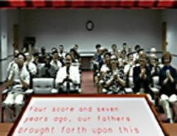
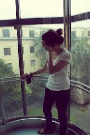
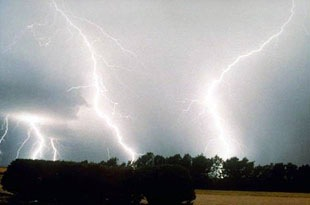

What other fears can be treated with virtual reality therapy?
Fear of Public Speaking
It is normal to be a little nervous when making a
speech. However, many people experience rapid heartbeat, sweating,
shaking, blushing, dry mouth, cracking voice and butterflies in their
stomach when attempting to make a presentation. Public speaking fear is
an example of a social phobia, and is the most commonly reported social
fear. People fear they will be embarrassed or look foolish.
Unfortunately,
fear of public speaking can adversely impact one’s career, personal
life and academic achievements. For example, sufferers may avoid careers
that would entail public speaking or decline promotions that would
involve giving lectures or presentations.
Virtual reality
therapy for fear of public speaking allows a patient to face an audience
that the therapist can control. The response of the audience (applause,
bored audience, interested audience) is controlled by the therapist.
Prepared text (outline, notes, etc.) can be loaded into the program and
appear along the top of the podium to be used as a point of reference by
the patient.

Fear of Heights
The fear of heights is called acrophobia. Patients with
this fear become extremely anxious in tall buildings, flying and
looking out over the side of a mountain. Many people often avoid these
situations.
Virtual Reality therapy for fear of heights places
the patient in a glass elevator and a series of bridges. The elevator is
an open elevator (no walls or ceiling) located on the inside of a
46-story hotel. The patient uses a joystick to move the elevator up and
down, at his or her own pace.
Fear of Elevators
Fear of elevators often is a combination of the fear of
heights and claustrophobia. Using virtual reality therapy the patient
enters an elevator in a tall building. The patient starts out on the
ground level looking out onto an indoor atrium moving to higher and
higher levels. Without ever leaving the ground, the patient experiences
the range of feelings associated with an actual elevator. Taking plenty
of time and practicing anxiety management techniques you are led slowly
and comfortably from one level to the next. The goal is for you to be
able to master your anxious feelings throughout the entire experience of
riding in an elevator. The patient uses a joystick to move the elevator
up and down, at his or her own pace.
At every step of the
virtual elevator ride, the therapist can see and hear what you are
experiencing. The therapist has control over the exposure, the virtual
ride and the length of the therapy session.

Fear of Thunderstorms
Virtual reality therapy can also help patients who are
afraid of storms that have thunder and lightening. The patient is seated
in a chair in a room with a large window. The weather can be varied
from a calm sunny day with birds singing outside the window to severe
storm conditions. The therapist can control rain intensity, wind
intensity, lightning/thunder, and power failures.

New programs are under development to help treat other fears. Please contact us for details.
Fear of Flying Treatment L.A.
The Center for Virtual Reality Therapy has offices in Santa Monica, Ca and Calabasas, CA. For further information please contact Dr. Alan
Berkowitz, Dr. Nan Tarlow or Dr. Gerald Tarlow at (818) 465-8778. Or email us at
vrtherapy@gmail.com